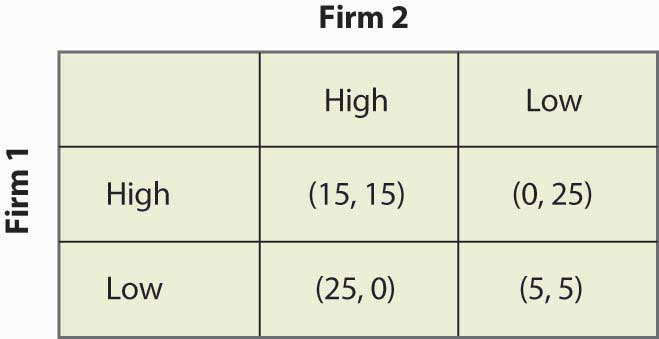
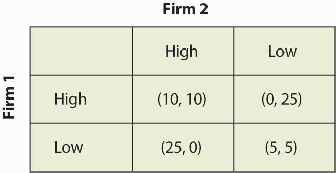

Some situations, like the price-cutting game or the apartment cleaning game, are played over and over. Such situations are best modeled as a supergameA game that is repeated an infinite number of times..The supergame was invented by Robert Aumann (1930–) in 1959. A supergame is a game that is played an infinite number of times, where the players discount the future. The game played each time is known as a stage gameThe game that is repeated in a supergame.. Generally supergames are played in times 1, 2, 3, ….
Cooperation may be possible in supergames, if the future is important enough. Consider the price-cutting game introduced previously and illustrated again in Figure 16.33 "Price cutting game revisited".
Figure 16.33 Price cutting game revisited
The dominant strategy equilibrium to this game is (Low, Low). It is clearly a subgame perfect equilibrium for the players to just play (Low, Low) over and over again because, if that is what Firm 1 thinks that Firm 2 is doing, Firm 1 does best by pricing Low, and vice versa. But that is not the only equilibrium to the supergame.
Consider the following strategy, called a grim trigger strategyStrategy that involves being nice initially but not nice forever when someone else isn’t cooperative., which involves being nice initially but not nice forever when someone else isn’t cooperative. Price High, until you see your rival price Low. After your rival has priced Low, price Low forever. This is called a trigger strategy because an action of the other player (pricing Low) triggers a change in behavior. It is a grim strategy because it punishes forever.
If your rival uses a grim trigger strategy, what should you do? Basically, your only choice is when to price Low because, once you price Low, your rival will price Low, and then your best choice is also to price Low from then on. Thus, your strategy is to price High up until some point t – 1, and then price Low from time t on. Your rival will price High through t, and price Low from t + 1 on. This gives a payoff to you of 15 from period 1 through t – 1, 25 in period t, and then 5 in period t + 1 on. We can compute the payoff for a discount factor δ:
If –10 + 20δ < 0, it pays to price Low immediately, at t = 0, because it pays to price Low; and the earlier that one prices Low, the higher the present value. If –10 + 20δ > 0, it pays to wait forever to price Low; that is, t = ∞. Thus, in particular, the grim trigger strategy is an optimal strategy for a player when the rival is playing the grim trigger strategy if δ ≥ ½. In other words, cooperation in pricing is a subgame perfect equilibrium if the future is important enough; that is, the discount factor δ is high enough.
The logic of this example is that the promise of future cooperation is valuable when the future itself is valuable, and that promise of future cooperation can be used to induce cooperation today. Thus, Firm 1 doesn’t want to cut price today because that would lead Firm 2 to cut price for the indefinite future. The grim trigger strategy punishes price cutting today with future Low profits.
Supergames offer more scope for cooperation than is illustrated in the price-cutting game. First, more complex behavior is possible. For example, consider the game shown in Figure 16.34 "A variation of the price-cutting game":
Figure 16.34 A variation of the price-cutting game
Here, again, the unique equilibrium in the stage game is (Low, Low). But the difference between this game and the previous game is that the total profits of Firms 1 and 2 are higher in either (High, Low) or (Low, High) than in (High, High). One solution is to alternate between (High, Low) and (Low, High). Such alternation can also be supported as an equilibrium, using the grim trigger strategy—that is, if a firm does anything other than what it is supposed to do in the alternating solution, the firms instead play (Low, Low) forever.
The folk theoremA theorem stating that if the value of the future is high enough, any outcome that is individually rational can be supported as an equilibrium to the supergame. says that if the value of the future is high enough, any outcome that is individually rational can be supported as an equilibrium to the supergame. Individual rationalitySituation in which the outcome offers a present value of profits at least as high as that offered in the worst equilibrium in the stage game from that player’s perspective. for a player in this context means that the outcome offers a present value of profits at least as high as that offered in the worst equilibrium in the stage game from that player’s perspective. Thus, in the price-cutting game, the worst equilibrium of the stage game offered each player 5, so an outcome can be supported if it offers each player at least a running average of 5.
The simple logic of the folk theorem is this. First, any infinite repetition of an equilibrium of the stage game is itself a subgame perfect equilibrium. If everyone expects this repetition of the stage game equilibrium, no one can do better than to play his or her role in the stage game equilibrium every period. Second, any other plan of action can be turned into a subgame perfect equilibrium merely by threatening any agent who deviates from that plan with an infinite repetition of the worst stage game equilibrium from that agent’s perspective. That threat is credible because the repetition of the stage game equilibrium is itself a subgame perfect equilibrium. Given such a grim trigger–type threat, no one wants to deviate from the intended plan.
The folk theorem is a powerful result and shows that there are equilibria to supergames that achieve very good outcomes. The kinds of coordination failures that we saw in the battle of the sexes, and the failure to cooperate in the prisoner’s dilemma, need not arise; and cooperative solutions are possible if the future is sufficiently valuable.
However, it is worth noting some assumptions that have been made in our descriptions of these games—assumptions that matter but are unlikely to be true in practice. First, the players know their own payoffs. Second, they know their rival’s payoffs. They possess a complete description of the available strategies and can calculate the consequences of these strategies—not just for themselves but also for their rivals. Third, each player maximizes his or her expected payoff; they know that their rivals do the same; they know that their rivals know that everyone maximizes; and so on. The economic language for this is the structure of the game, and the players’ preferences are common knowledge. Few real-world games will satisfy these assumptions exactly. Since the success of the grim trigger strategy (and other strategies we haven’t discussed) generally depends upon such knowledge, informational considerations may cause cooperation to break down. Finally, the folk theorem shows us that there are lots of equilibria to supergames but provides no guidance on which ones will be played. These assumptions can be relaxed, although they may lead to wars on the equilibrium path “by accident”—and a need to recover from such wars—so that the grim trigger strategy becomes suboptimal.